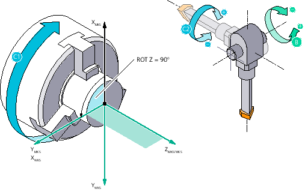
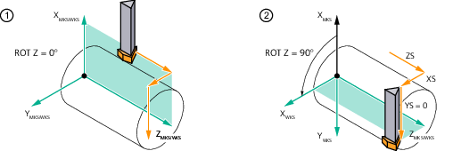
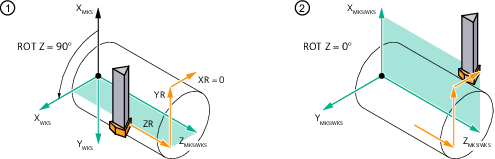

With the Y turning function, Y turning tools are supported. With Y turning tools, the cutting pressure is not applied laterally but vertically on the holder. This permits a machining feedrate that is up to three times higher. However, this technology only allows external machining.
| | Software option To use the "Y turning" function, you need the "Turning with the Y axis" software option. |
| Note |
The "Y turning" function can only be activated if $MCS_TECHNOLOGY = 1 (turning) is set under MD52200. |
If Y turning is enabled, the CYCLE805 can be used to align the Y turning tool for turning. In contrast to the "Align turning tool", for Y turning, the WCS is rotated around Z through - 90° (working range 1) or + 90° (working range 2) (MD $MCS_FUNCTION _MASK_TURN) to be able to perform the machining. This enables programming of turning in the G18 plane (ZX). The NC command CUTMOD calculates the data of the tool online based on the tool orientation. The calculation involves the cutting edge position, the holder angle, and the cut direction.
Y turning in working range 2 (WCS rotation around Z: +90°)
Machining with Y turning active always takes place in plane G18.
Creating a Y turning tool with three cutting edges
Three cutting edges with different clamping angles are defined:
D1: Length X 10.000, length Z 125.000, radius 0.800, clamping angle = -90° - 112.5° = -202.5°
D2: Length X 10.000, length Z 125.000, radius 0.800, clamping angle = -90° + 112.5° = 22.5°
D3: Length X 15.000, length Z 125.000, radius 0.800, clamping angle = -90°
D1 | D2 | D3 | |
① | Reference direction | Reference direction | Reference direction |
② | Holder angle (= 50°) | Holder angle (= 50°) | Holder angle (= 62.5°) |
③ | Cutting tip angle (= 80°) | Cutting tip angle (= 80°) | Cutting tip angle (= 55°) |
④ | Clamping angle (= -90° - 112.5° = -202.5°) | Clamping angle (= -90° + 112.5° = 22.5°) | Clamping angle (= -90°) |
| Note |
Alternatively, the Y turning tool can be created using a multitool. In this case, the clamping angle remains at 0° and the rotation is defined by the multitool angle. The clamping angle is entered in window "Further data - ...". |
Definition of angle γ and the B axis position
For the alignment of Y turning tools, the B axis position and the Gamma angle are used. Gamma refers to the WCS.
The definition of the angle Gamma is machine-independent. In contrast, the B axis position is machine-dependent and is set by the machine manufacturer via $MCS_Y_TURN_SWIVEL_ANGLE.
You can find more information on the topic of cutting edge positions in the Tools Function Manual under "Modifications during the rotation of turning tools".
Mirroring (machining at the counterspindle)
Mirroring of the Z axis (e.g. on the counterspindle) results in the same machining in the mirrored coordinate system. CYCLE805 internally calculates γ, so that the same cutting edge position is obtained as in the non-mirrored coordinate system.
The mirroring of the Z axis must be permanently activated in a work offset.
Working area
If function "Y turning: WCS rotation in the input mask selectable" was set by the machine OEM, then you can switch between the working areas in the operator mask.
Switching between working areas results in the same machining in a rotated coordinate system. CYCLE805 internally calculates γ so that the same cutting edge position is obtained as in the basis working area (MD $MCS_FUNCTION _MASK_TURN).
The machine OEM defines the working area using MD $MCS_FUNCTION _MASK_TURN.
Traverse to the starting position or retract position
When selecting Y turning, a starting point for further machining can be specified by selecting "Starting point = yes". The 3 values ZS, XS and YS are approached in the coordinate system for Y turning in this order. YS is always 0, in preparation for turning. If you select "Starting point = no", you must provide a suitable starting point (incl. Y=0) for subsequent turning cycles yourself.
① | Before selection Y turning with "Starting point = yes" |
② | Start point |
When deselecting Y turning, selection "Retract = yes" can be used to specify a point at which there is no danger of collision when machining continues. The 3 values ZR, XR and YR are approached in the coordinate system for Y turning in the specified order. Then the WCS is turned back again by Z +/-90°. If you select "Retract = no", you are responsible for the further traversing movements yourself.
① | At the end of machining before deselection |
② | After deselection with retract |
Cycles for Y turning
You can use the following standard cycles for Y turning:
Stock removal (CYCLE951), (CYCLE952): Stock removal along the contour, only from outside front and outside rear, contour grooving: only longitudinal outside
Groove (CYCLE930), only longitudinal outside
Undercut (CYCLE940), only outside
Cut-off (CYCLE92)
Contour turning (CYCLE951), longitudinal outside, in parallel with the contour, outside
You can also use the same turning operations under ShopTurn.